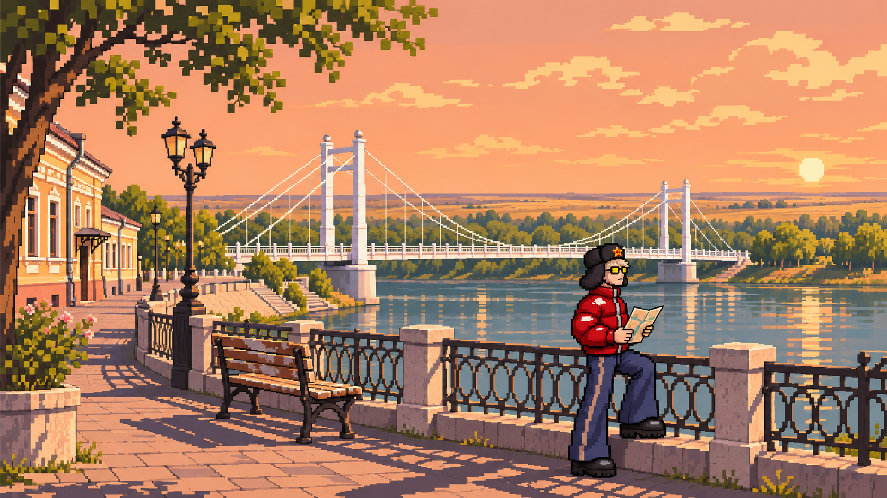

Два города / история семьи / будущие путешествия
Города, до которых
хочется дойти.
Санкт-Петербург и Оренбург — города, откуда были мои родственники. Здесь начинается пиксельная версия путешествий, которые хочется однажды совершить.

Дойти до воды
Город отражений
и долгого света.
Гранит, ограда, канал и тёплые окна. Герой останавливается с картой у воды. Он не спешит искать следующий квест — сначала хочется просто посмотреть.
«Однажды я пройду здесь уже не в пикселях».
Память о родственниках пока остаётся причиной маршрута. Конкретные адреса и семейные истории можно будет добавить, когда они будут известны.

На другом берегу
Больше неба.
Дальше горизонт.
Белый мост, широкая река и тёплый свет. Денис стоит у перил, держит сложенную карту и смотрит через Урал. Здесь у истории другой ритм.
«Хочется увидеть город, с которого начинались чьи-то наши истории».
Ориентир сцены — пешеходный мост «Европа — Азия». Семейные дома и события не выдумываются; для них останется место в будущей личной карте.
Концепт будущего путешествия. Сцены — художественные композиции, не точные виды с одной точки и не свидетельство состоявшейся поездки. Переключатели ниже изображения меняют короткий текст сцены; свободная ходьба пока не реализована. Оренбургский ориентир сверён с официальным туристическим порталом региона.